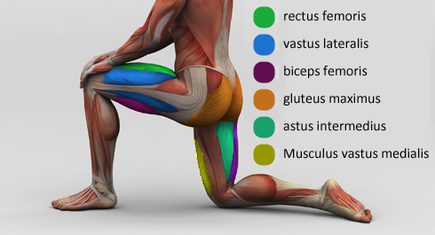
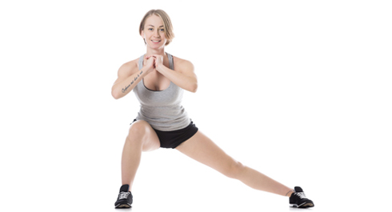

Finally we have reached the fourth exercise in our training program. Today we will talk about the variables you can change doing lunges and what results it will bring to you.
Lunges - is a great exercise when we talk about illateral exercises, i.e. ones, which allows you to load one side of a body independently (for example left leg and not right and vice versa). But you can not only remove muscle imbalance between legs, but also shift training load from one leg muscles to others with little changes in the process of execution of this exercise.
To understand better the upcoming imformation, let's spend a little time studying the muscles which allows you to do lunges:

Step range. If you will do shorter steps, then you will shift more load toward quadriceps and less toward hip biceps. Otherwise, if you start making longer steps, you will add load to hip biceps and glutes and less to quads.
4 sides of the world. You can not only do lunges forward/backward, but also to the sides. This variation will allow you to increase the load on the inner muscles of the hips and glutes and decrease the load of the frontal muscles of the hip.

Increase the degree. Lunges can be done not only on the horizontal surface, but also on incline surface! This will immediately increase the intensity and difficulty of the exercise, thus making it more effective for muscle building!
We hope this new information will help you in your futher training!